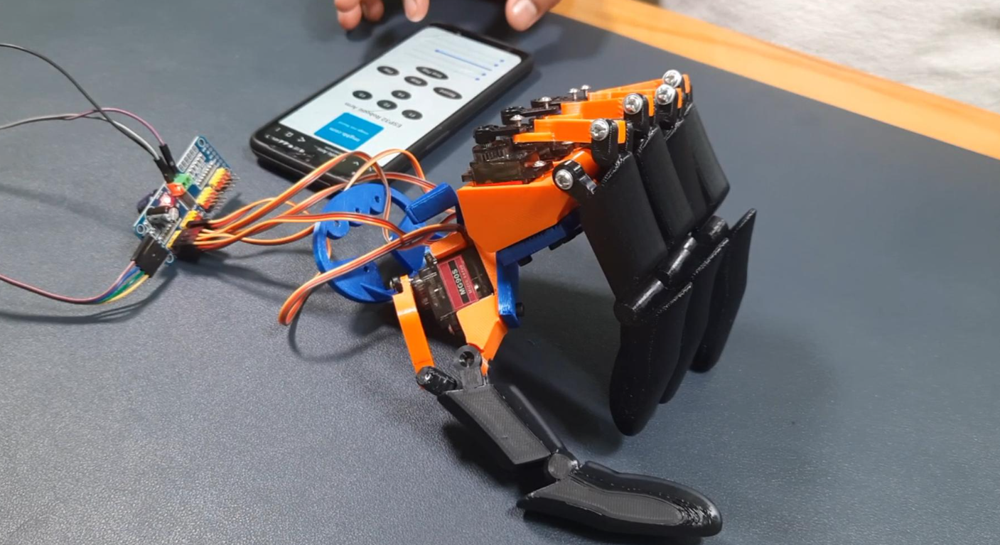
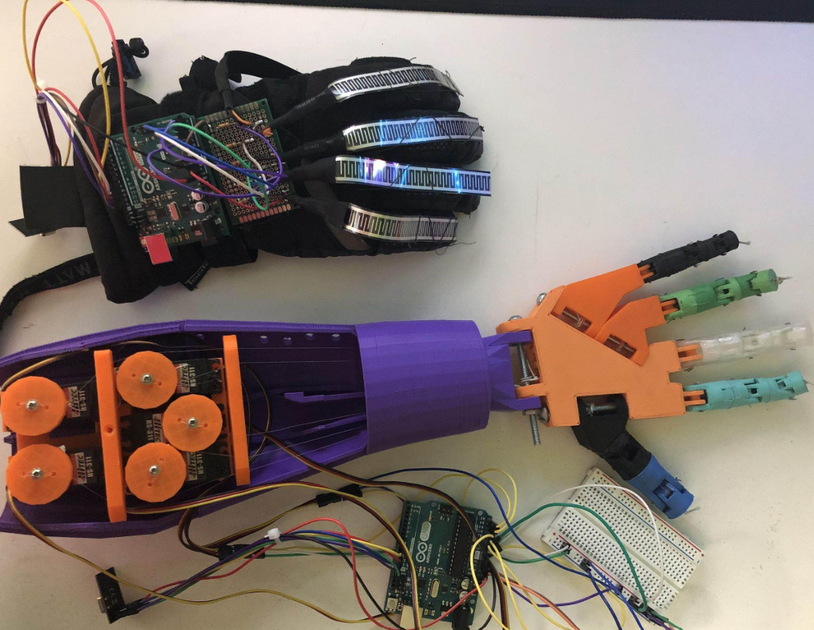
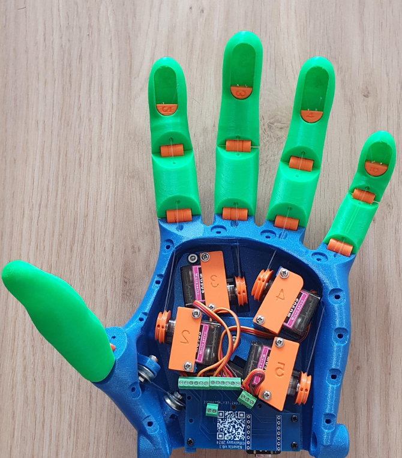
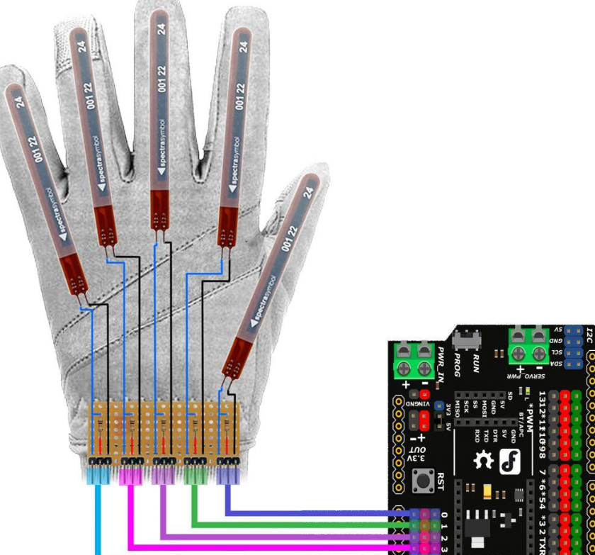

Five-Finger Control
Control all five robotic fingers independently using five flex sensors.
VJAYA ROBOTICS PROJECT
ESP32 ROBOTICS PROJECTBuild a five-finger robotic hand using an ESP32, five flex sensors and five servo motors. Control the robotic fingers by bending your fingers while wearing a sensor-equipped glove.
Explore ProjectPROJECT OVERVIEW
CYBERHAND is a five-finger robotic hand controlled by an ESP32 development board. It uses five flex sensors attached to a glove to detect finger bending.
Each flex sensor changes its electrical resistance when bent. The ESP32 reads these changes through its analog input pins and processes the sensor values.
Based on the detected finger movement, the ESP32 controls five servo motors. Each servo operates one corresponding robotic finger.




WHAT IT CAN DO
Control all five robotic fingers independently using five flex sensors.
Use the ESP32 to read sensor values and control the servo motors.
Detect finger bending using flexible resistance sensors.
Operate each robotic finger using an individual servo motor.
Convert hand movements into robotic finger movements through sensor readings.
Keep sensor reading, servo control and configuration in separate files.
HARDWARE REQUIREMENTS
SOFTWARE REQUIREMENTS
The program is organized into separate files for the main sketch, configuration, flex sensor reading and servo motor control.
HOW IT WORKS
HARDWARE CONNECTIONS
| Component | Component Pin | ESP32 Connection |
|---|---|---|
| Thumb Flex Sensor | Signal | GPIO32 |
| Index Flex Sensor | Signal | GPIO33 |
| Middle Flex Sensor | Signal | GPIO34 |
| Ring Flex Sensor | Signal | GPIO35 |
| Little Finger Flex Sensor | Signal | GPIO36 |
| Thumb Servo | Signal | GPIO13 |
| Index Servo | Signal | GPIO14 |
| Middle Servo | Signal | GPIO16 |
| Ring Servo | Signal | GPIO17 |
| Little Finger Servo | Signal | GPIO18 |
| Servo Power Supply | Positive | External regulated 5V |
| Servo Power Supply | Ground | Common GND with ESP32 |
FINGER CONTROL
| Flex Sensor | Servo Motor | Robotic Finger |
|---|---|---|
| Flex Sensor 1 | Servo 1 | Thumb |
| Flex Sensor 2 | Servo 2 | Index Finger |
| Flex Sensor 3 | Servo 3 | Middle Finger |
| Flex Sensor 4 | Servo 4 | Ring Finger |
| Flex Sensor 5 | Servo 5 | Little Finger |
Each sensor controls its corresponding servo. The sensor readings must be calibrated to determine the correct open and closed positions of each finger.
PROGRAM STRUCTURE
Main sketch and project initialization.
ESP32 pin assignments and project settings.
Flex sensor initialization and analog readings.
Servo initialization and finger movement control.
PROGRAMMING
Download the CYBERHAND ESP32 project files.
CYBERHAND.ino
Download Code ↓ 📄config.h
Download Code ↓ 📄flex_sensor.h
Download Code ↓ 📄flex_sensor.cpp
Download Code ↓ 📄servo_control.h
Download Code ↓ 📄servo_control.cpp
Download Code ↓PROJECT DEMONSTRATION
CYBERHAND Robotic Hand Demonstration
Add your actual robotic hand photograph or demonstration video here.IMPORTANT INFORMATION